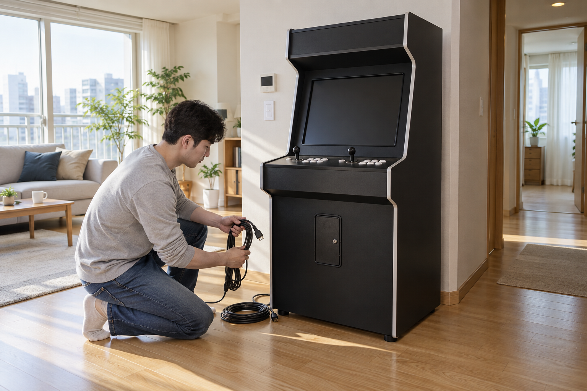
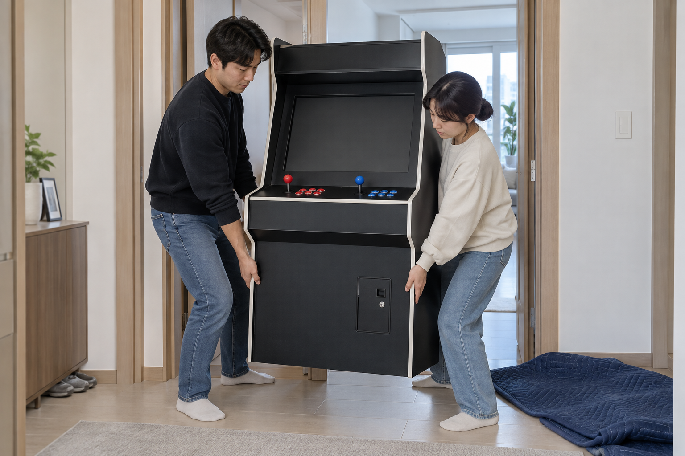

스탠드형 오락기는 전원을 끄고 모든 케이블을 분리한 뒤, 이동 경로와 출입문 폭을 먼저 확인하고 두 사람이 함께 옮기는 편이 안전합니다. 화면이나 조작부를 손잡이처럼 잡지 말고, 정확한 제품의 이동 방법이 불분명하면 판매자 안내를 먼저 받으세요.
이동 경로와 제품 구성을 먼저 확인하세요
출발 위치부터 새로 둘 자리까지 문턱, 모서리, 러그와 바닥의 물건을 치우고 문이 충분히 열리는지 확인하세요. 높이와 폭뿐 아니라 방향을 바꿀 공간도 살펴보고, 바퀴나 분리 가능한 부품이 있는지는 현재 제품의 안내를 따르세요. 노리박스 제품 목록에는 27형 복각판 스탠드형과 여러 32+ 스탠드형 상품이 각각 안내되어 있어, 다른 오락기의 크기와 구조를 기준으로 이동 계획을 세우면 안 됩니다.
주문한 정확한 모델의 구조와 이동 경로를 함께 확인해야 예상치 못한 걸림을 줄일 수 있습니다.
- 출입문과 복도에서 가장 좁은 지점 확인하기
- 문턱, 러그, 전선과 작은 가구 치우기
- 새 위치의 바닥 상태와 전원 위치 확인하기
- 분리 가능한 부품과 바퀴 사용법을 제품 안내에서 찾기

전원과 케이블부터 완전히 분리하세요
게임을 종료하고 제품 안내 순서에 따라 전원을 끈 뒤, 플러그와 연결 케이블을 모두 분리하세요. 케이블은 기기 아래나 바퀴에 걸리지 않게 따로 묶어 두고, 열쇠나 작은 부품도 빠지지 않도록 별도로 보관하세요. 전원 순서가 헷갈리면 오락기를 안전하게 켜고 끄는 방법을 먼저 확인하세요.
이동 중 케이블이 발이나 기기 아래에 걸리지 않도록 전원선과 연결선을 따로 정리하세요.
화면과 조작부를 잡지 마세요
화면, 조이스틱, 버튼과 돌출된 장식은 기기를 들어 올리는 손잡이가 아닙니다. 화면 패널에 압력을 주지 말라는 디스플레이 제조사의 이동 안내처럼, 스탠드형 오락기도 화면과 조작부를 누르지 말고 제품 안내에 표시된 튼튼한 프레임 부분을 확인해 잡으세요. 보호재를 사용할 때도 버튼이 계속 눌리거나 화면에 압력이 집중되지 않게 하세요.
화면과 조작부 대신 제품 안내에서 확인한 튼튼한 프레임 부분을 잡아야 합니다.

두 사람이 같은 신호로 천천히 옮기세요
한 사람이 이동 방향을 확인하고 다른 사람이 반대편을 보며, 출발·정지·내려놓기 신호를 미리 정하세요. 기기가 예상보다 무겁거나 계단, 좁은 회전 구간처럼 위험한 경로가 있으면 직접 무리하지 말고 판매자나 전문 운반 도움을 요청하세요. 새 위치에 내려놓은 뒤 흔들림과 케이블 눌림이 없는지 확인하고, 우리 집 공간에 맞는 오락기 형태도 함께 살펴보세요.
두 사람은 이동 방향과 멈추는 신호를 미리 정하고 한 번에 짧은 구간씩 옮기세요.
현재 노리박스 스탠드형 오락실게임기는 제품자세히보기에서 확인하세요.